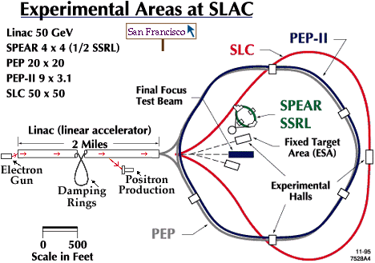

Stanford Linear Accelerator Center,
located just south of San Francisco,
is the longest linear accelerator in the world.
It accelerates electrons and positrons down its
2-mile length to various targets, rings
and detectors at its end. The PEP ring shown is being rebuilt for the
B factory,
which will study some of the
mysteries of antimatter using B mesons.
Related physics will be done at Cornell with
CESR and in Japan with KEK.

For more information:
We thank SLAC for permission to use their images.